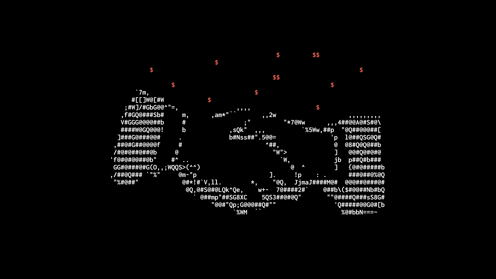
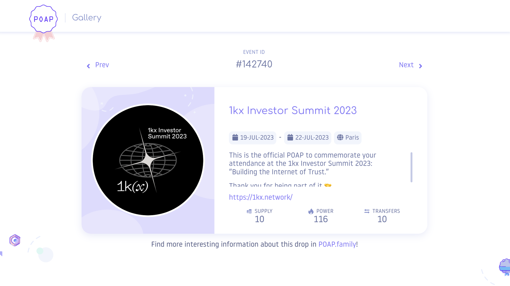

1kx is an early-stage investment firm that specializes in ecosystem growth. As a Designer at 1kx I have been responsible for the day-to-day design needs and implementation of solutions across their digital mediums. This has encompassed designing and producing: graphics, illustrations, presentations, and more.
Articles
One of my biggest tasks has been creating the imagery for the research that 1kx conducts and publishes. The visuals attached to this research help support the research as well as increase engagement across social channels. We have published over 10 articles since I joined.
Visuals
Activating the 1kx brand has meant creating visuals for a variety of situations. Most of these have been used in presentations, decks, and on the 1kx website. Part of my work has been to differentiate between the various sectors that 1kx is involved with including: DeFi, NFTs, Infrastructure, and more.
POAP
For the 1kx Investor Summit 2023 we decided to create a POAP as a way to commemorate the event for attendees. We wanted to match the aesthetics of the other event materials while also providing high level information within the POAP artwork itself. Once I created the artwork we were able to launch the POAP to be minted for the duration of the Summit.
+ Please contact me if you would like more information about this work.
++ Original 1kx brand designed by Times Newᵀᴺ.